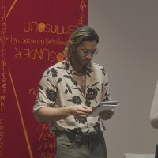

SEAN FRANCIS HAN
Sean Francis Han is a theorist and arts educator working and researching in the areas of continental theory, French Philosophy, Metaphysics, Metaphilosophy, and Literature. Academically, Sean's research seeks to understand, rework, and revitalise the way we conceive of reality in the wake of the poststructuralist turn.
Socio-politically, he aims to import the insights of academia to a wider, more diverse audience, and to utilise them in activism and artistic practice. He has worked on projects with New Naratif, the Substation, Yale-NUS, the University at Buffalo, and the Singapore Art Museum, which include podcasts, public seminars, and reading groups.